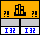

LabVIEW could not find the function you want to call in the library you specified in this Call Library Function Node.

To correct this error, right-click the node and select Configure from the shortcut menu to display the Call Library Function dialog box. Use this dialog box to specify the function name you want to use.
Alternatively, you can select a different library that contains the function you want to call.
You might receive this error for one of the following reasons:
You spelled the function name incorrectly. Function names are case sensitive.
You called a Windows API function implemented in Unicode and ANSI without appending an A for ANSI or W for Unicode to the end of the function name.
You called a function that was not exported from its library.
You did not use the actual name of the function in the library, which can differ from the name you use to call the function from a text-based programming language.